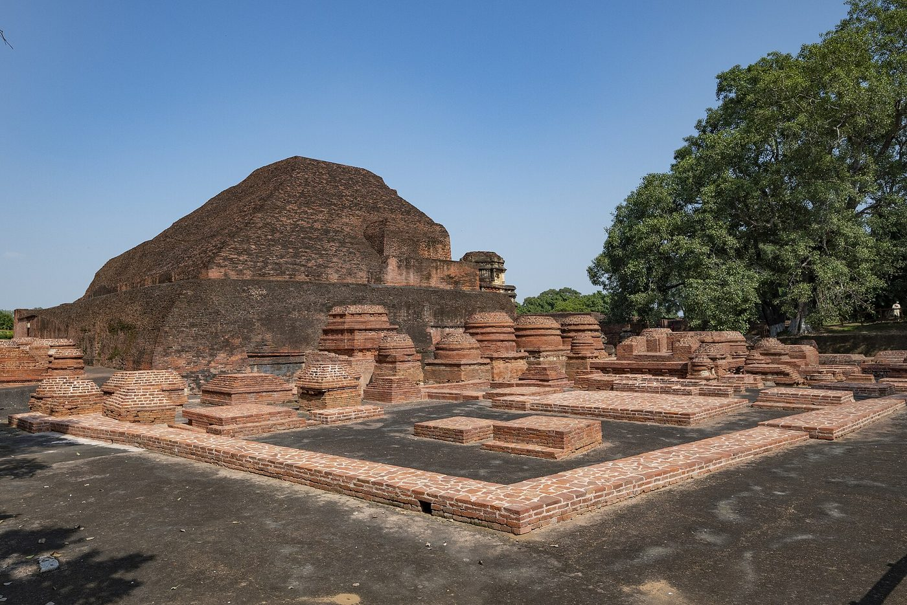

Chapter 7: Buddhist Institutions of Learning¶
7.1 The Saṅgha: Foundation of Buddhist Institutional Life¶
The Saṅgha (“community”) is the third of the Three Jewels (triratna) of Buddhism, alongside the Buddha and the Dhamma. The Buddha established the Saṅgha as the institutional vehicle for preserving, practising and transmitting his teaching. Over the centuries the larger monasteries also became centres of learning, where monks studied not only the scriptures but grammar, logic, medicine and the arts (Dutt 1962).
7.1.1 Organisation of the Early Saṅgha¶
The Vinaya’s rules for collective decision, seniority by ordination and the fortnightly recitation of the Pātimokkha are described in Chapter 2 (Section 2.14). Two further institutions made the monastery a place of study: the three-month rains retreat (vassa), when wandering monks settled in one place and the residences that sheltered them gradually became permanent; and the bond between pupil and preceptor (upajjhāya) or teacher (ācariya), through which texts and practice were passed on (Dutt 1962).
7.2 Nālandā Mahāvihāra¶
Nālandā, in the old kingdom of Magadha (present-day Bihar), was the most celebrated Buddhist monastery of India. It flourished as a centre of learning from the fifth century CE to about 1200, attracting students from across the Buddhist world (Dutt 1962; Scharfe 2002).
7.2.1 History and Patronage¶
The Buddha is said in the Pāli texts to have stayed at Nālandā village, but the great monastery was a later foundation. Xuanzang records that it was begun by a king called Śakrāditya, usually identified with the Gupta emperor Kumāragupta I (c. 415–455 CE), and enlarged by his successors. Seals and inscriptions found at the site confirm royal and private patronage over many centuries (Xuanzang 1884; Dutt 1962). After the Guptas, Harṣa of Kanauj (r. 606–647) is said by Xuanzang’s biographer Huili to have supported the monastery with the revenues of about a hundred villages (Huili (Hwui Li) 1888); an inscription found at the site records a gift in the time of Yaśovarman of Kanauj (8th century); and the Pāla kings of Bengal and Bihar (8th–12th centuries), notably Dharmapāla and Devapāla, were its patrons in its last centuries. A copper plate of Devapāla records endowments at Nālandā made at the request of the Śailendra king Bālaputradeva of Sumatra and Java, who had built a monastery there — a sign of how far the monastery’s reputation reached.
7.2.2 The Curriculum¶
The accounts of the Chinese visitors Xuanzang (in India c. 630–643) and Yijing (in India 673–685) are our main sources for teaching at Nālandā in its prime (Table 7.1) (Xuanzang 1884; Yijing (I-tsing) 1896).
| Category | Subjects |
|---|---|
| Buddhist doctrine | Scriptures and Abhidharma of several schools; Mahāyāna texts; Madhyamaka and Yogācāra; Vinaya |
| Logic and epistemology | Hetu-vidyā, especially the works of Dignāga and (later) Dharmakīrti |
| Grammar | Śabda-vidyā: Sanskrit grammar, including Pāṇini’s system |
| Other systems | The Vedas and Brahmanical philosophy such as Sāṃkhya, studied for debate |
| Medicine | Cikitsā-vidyā |
| Arts and crafts | Śilpasthāna-vidyā |
| Tantra | From about the 8th century, Vajrayāna texts and ritual |
7.2.3 The Site¶
Excavations by the Archaeological Survey of India from 1915 onwards exposed a row of large brick monasteries (vihāras) built around open courtyards, facing a row of temples and stūpas across an open space. The largest monument, known as “Temple 3”, is a stūpa enlarged in at least seven building phases and is traditionally associated with the disciple Sāriputta. Seals bearing the legend of the “community of venerable monks of the great monastery of Nālandā” were found in quantity. The site was inscribed as a UNESCO World Heritage Site in 2016.
7.2.4 Numbers, Libraries and Myths¶
The Chinese accounts give an impression of size and seriousness. Xuanzang describes keen debate and says that strangers who wished to enter were put hard questions by the keeper of the gate; in Beal’s translation, “those who fail compared with those who succeed are as seven or eight to ten”. His biographer Huili gives the number of resident monks as about ten thousand and that of learned teachers as 1,510 (Huili (Hwui Li) 1888); Yijing, a generation later, speaks of more than three thousand monks (Yijing (I-tsing) 1896). These figures are approximate and may include monks from the surrounding establishments (Scharfe 2002).
Historical Note: The “nine million manuscripts”
Popular writing often claims that Nālandā’s library held “nine million manuscripts” and burned for months. Neither claim is found in Xuanzang, Yijing or any other contemporary source. The names of a library complex called Dharmagañja, with three buildings (Ratnasāgara, Ratnodadhi and Ratnarañjaka), come from much later Tibetan tradition, notably Tāranātha (1608) (Tāranātha 1970). Nālandā certainly possessed large collections of manuscripts — Yijing copied hundreds of texts there — but their size is unknown.
7.2.5 Scholars Associated with Nālandā¶
Later tradition, especially Tibetan tradition, associates many famous Buddhist thinkers with Nālandā. Some associations are historical; others are anachronistic, since the monastery was founded in the fifth century.
- Nāgārjuna (c. 150–250 CE)
- Tibetan tradition makes him an abbot of Nālandā, but he lived centuries before its foundation.
- Asaṅga and Vasubandhu (4th–5th c.)
- Also linked with Nālandā by later tradition; the historical connection is uncertain.
- Dignāga (c. 480–540) and Dharmakīrti (6th–7th c.)
- The logicians are associated with Nālandā in Tibetan sources; their works were certainly studied there.
- Śīlabhadra (7th c.)
- The Yogācāra master who was head of Nālandā when Xuanzang studied there.
- Śāntideva (8th c.)
- According to tradition, composed the Bodhicaryāvatāra at Nālandā.
- Śāntarakṣita (8th c.)
- A Nālandā scholar who synthesised Madhyamaka and Yogācāra and helped to found the first Tibetan monastery at Samye.
- Nāropa (11th c.)
- Said to have served as a gatekeeper-scholar of Nālandā before becoming a tantric adept.
7.3 Vikramaśīla Mahāvihāra¶
Vikramaśīla, founded by the Pāla king Dharmapāla (r. c. 775–812) in eastern Bihar (the excavated site at Antichak, Bhagalpur district), became the leading centre of tantric Buddhist learning in the later Pāla period (Dutt 1962). Tibetan sources describe a hierarchy of learned “gatekeeper scholars” (dvārapaṇḍita) and a strong link with Tibet.
The most famous scholar associated with Vikramaśīla is Atiśa Dīpaṅkara Śrījñāna (982–1054). Born in Bengal, he studied with many teachers, travelled to Suvarṇadvīpa (in present-day Indonesia) to study with the master Dharmakīrti of Suvarṇadvīpa, and became a senior teacher at Vikramaśīla. In 1040 he left for western Tibet at the invitation of its rulers, reaching Tibet in 1042; there he wrote the Bodhipathapradīpa (“Lamp for the Path to Awakening”) and spent the rest of his life. His work shaped the Kadam school and, through it, the later Gelug tradition (Chattopadhyaya 1967). Atiśa is thus a Vikramaśīla figure, not, as is sometimes said, one of the last scholars of Nālandā.
7.4 Other Major Monasteries¶
- Odantapurī (Bihar)
- A Pāla foundation (attributed in Tibetan sources to Gopāla or Dharmapāla) near modern Bihar Sharif; Tibetan tradition holds that it served as a model for Samye.
- Somapura Mahāvihāra (Paharpur, Bangladesh)
- Founded by Dharmapāla, as its seals record; one of the largest single monasteries in South Asia, with 177 cells around a vast cruciform shrine. A UNESCO World Heritage Site.
- Jagaddala (northern Bengal)
- Founded by Rāmapāla (late 11th century); an important centre in the last decades of Pāla rule.
- Valabhī (Gujarat)
- A great monastic centre of the 6th–8th centuries under the Maitraka kings, which Yijing compared with Nālandā; Xuanzang reports that most of its monks followed the Sāṃmitīya school.
- Takṣaśilā (Taxila, in present-day Pakistan)
- An ancient city famous as a place of learning (see below), but not a university.
7.5 Takṣaśilā: Teachers, Not a University¶
Takṣaśilā (Taxila), in the north-west of the subcontinent, has a reputation in Indian tradition as a city of learning. The Jātaka stories often send young men there to study with a famous teacher, and later tradition links the grammarian Pāṇini and the statesman Cāṇakya (Kauṭilya) with the region. It is often described as “the world’s first university”. The evidence does not support that description. The Jātakas describe individual teachers taking private pupils in their homes; there is no evidence of a corporate institution with a campus, curriculum or degrees (Scharfe 2002). Excavations by John Marshall revealed three successive cities (Bhir Mound, Sirkap and Sirsukh) and many Buddhist monasteries and stūpas of the Kuṣāṇa period, such as the Dharmarājikā stūpa and the Jauliāṅ monastery, which were damaged in the troubled fifth and sixth centuries.
Takṣaśilā lay at the meeting point of Indian, Iranian, Greek and Central Asian cultures. The art of the wider Gandhāra region, which produced some of the earliest images of the Buddha in human form, reflects this mixture.
7.6 The Pāla Dynasty and Buddhist Patronage¶
The Pāla dynasty of Bengal and Bihar (c. 750–1160) was the last great royal patron of Buddhist institutions in India. Its kings — notably Dharmapāla (c. 775–812), Devapāla (c. 812–850) and Mahīpāla I (c. 988–1038) — founded or endowed several great monasteries (Table 7.2), while also supporting Brahmanical temples and brāhmaṇa grantees.
| Monastery | Founder/patron | Period | Notes |
|---|---|---|---|
| Nālandā | Gupta kings; later Pāla support | c. 5th–12th c. | The oldest and most famous centre |
| Vikramaśīla | Dharmapāla | late 8th c.–c. 1200 | Tantric studies; strong links with Tibet |
| Odantapurī | Pāla kings (Tibetan tradition) | 8th c.–c. 1200 | Model for Samye (Tibetan tradition) |
| Somapura | Dharmapāla | late 8th c.–12th c. | Vast monastery with cruciform shrine |
| Jagaddala | Rāmapāla | late 11th–early 13th c. | One of the last Pāla foundations |
The Pāla period also produced a distinctive style of Buddhist art — bronze and stone sculpture and illustrated palm-leaf manuscripts — that influenced the art of Nepal, Tibet, Myanmar and Java (Huntington 1985).
7.7 The Curriculum and Methods of Instruction¶
Mahāyāna sources such as the Bodhisattvabhūmi name five fields of knowledge (pañca vidyāsthāna) in which a bodhisattva should be trained: the “inner science” (adhyātma-vidyā) of Buddhist doctrine and practice, the science of reasons (hetu-vidyā), that is, logic, epistemology and debate, the science of language (śabda-vidyā) or grammar, the science of healing (cikitsā-vidyā), and the arts and crafts (śilpasthāna-vidyā). The list justified the study of subjects that were not Buddhist in themselves, on the ground that a bodhisattva needs them to help others and to defeat opponents in debate; Xuanzang and Yijing describe the same range of studies at Nālandā (Table 7.1).
Teaching combined the oral exposition of texts by senior scholars, memorisation, private study, tutorial guidance from a preceptor, and debate. Yijing’s account describes the daily life of monks in some detail, including ritual, study and the rules of monastic discipline (Yijing (I-tsing) 1896). Indian educational institutions more generally, Brahmanical as well as Buddhist and Jain, are discussed in Volume 22 of this series (Manas and Śikṣā).
7.8 Medicine in the Monasteries¶
Medicine (cikitsā-vidyā) was one of the five sciences of the Mahāyāna curriculum, and care of the sick was a duty of the monastic community from the beginning. The Vinaya’s section on medicines (Mahāvagga VI) allows sick monks five “medicines” — ghee, fresh butter, oil, honey and molasses — and regulates the use of roots, fruits, salts and other remedies. Another section (Mahāvagga VIII) tells the stories of Jīvaka Komārabhacca, physician to King Bimbisāra and to the Buddha, and records the Buddha’s rebuke to monks who had neglected a sick companion: whoever would attend on him, he said, should attend on the sick. Aśoka’s Rock Edict II speaks of medical provision for people and for animals and of the planting of medicinal herbs, roots and fruits. Kenneth Zysk has argued that the wandering ascetics and then the Buddhist monasteries played a significant part in forming the empirical, rational medicine later codified as Āyurveda (Zysk 1991).
Yijing devoted several chapters of his record to Indian medicine, describing its eight branches and the practice of fasting during illness (Yijing (I-tsing) 1896). Indian medical learning also travelled with Buddhism to Tibet, where the root text of Tibetan medicine, the Four Tantras (rgyud bzhi), draws heavily on Vāgbhaṭa’s Aṣṭāṅgahṛdaya, itself translated into Tibetan; whether Vāgbhaṭa was a Buddhist is debated. Jain authors wrote medical works too: the Digambara Ugrāditya’s Kalyāṇakāraka (9th century) presents Āyurveda in a Jain frame and rejects remedies that require the killing of animals. These texts record what their authors taught; they are not evidence that the remedies work. Classical Indian medicine is the subject of Volume 13 of this series (Āyurveda).
7.9 The Buddhist Art of Debate¶
Debate was a central activity in Indian intellectual life, and the monasteries were among its arenas. The Nyāya tradition classified debate into three kinds, a scheme widely shared (Table 7.3).
| Type | Sanskrit | Description |
|---|---|---|
| Honest debate | Vāda | Both parties seek the truth by valid means of knowledge |
| Disputation | Jalpa | Aimed at victory; quibbles and other illegitimate tactics used |
| Destructive debate | Vitaṇḍā | Refuting the opponent without defending any thesis of one’s own |
Xuanzang describes vigorous public debate at Nālandā and at royal courts, where a defeated debater might lose his reputation and his patrons. Later Buddhist and Jain hagiographies are full of debates in which the loser and his followers convert — stories that tell us more about the prestige of debate than about particular historical events. Philosophical exchanges between schools were mostly conducted in writing: the Naiyāyika Uddyotakara, for example, criticised Dignāga in his commentary on the Nyāyasūtra, and Dharmakīrti in turn answered his critics.
Scholarly Note: Debate in Tibet
The Tibetan monastic debate practice — in which a standing challenger questions a seated defender, punctuating each point with a clap — is a Tibetan development, but it rests on the Indian Buddhist logical curriculum transmitted to Tibet, above all the works of Dharmakīrti (Samuel 1993).
7.10 The Spread of Buddhism Across Asia¶
From its Indian heartland Buddhism spread across much of Asia, carried by monks, merchants and royal envoys (Table 7.4).
| Region | Period | Notes |
|---|---|---|
| Sri Lanka | 3rd c. BCE | Mission of Mahinda (tradition); Pāli canon preserved |
| Gandhāra and Central Asia | 2nd c. BCE–10th c. CE | Kuṣāṇa patronage; Silk Road oasis kingdoms; route to China |
| China | 1st c. CE onwards | Translation of sūtras; Chan, Pure Land, Tiantai and Huayan schools |
| Korea | 4th c. CE | Via China; Seon (Chan) and other schools |
| Japan | 6th c. CE | Via Korea and China; Zen, Pure Land, Shingon, Nichiren |
| Southeast Asia | early centuries CE onwards | Mahāyāna and Brahmanical (Śaiva and Vaiṣṇava) cults first (Borobudur, 9th c.); Theravāda dominant on the mainland from the 13th–14th c. |
| Tibet | 7th–8th c. CE | Royal patronage; Indian Mahāyāna and Vajrayāna |
| Mongolia | 13th c.; revived 16th c. | Via Tibet |
7.11 The Decline of Buddhism in India¶
By the fourteenth century Buddhism had almost disappeared from most of the Indian plains, surviving mainly in the Himalayan regions and in a few scattered communities, while it flourished in Sri Lanka, Tibet, East and Southeast Asia. How a religion so deeply rooted in India came to vanish from its homeland is one of the major questions of Indian religious history. Historians agree that there was no single cause; they differ on the weight to give to each factor (Harvey 2013; Jaini 1980; Elverskog 2010; Verardi 2011).
7.11.1 A Long Contraction¶
The decline was gradual and uneven. Already in the seventh century Xuanzang described many monasteries in ruins or deserted, especially in the north-west, even as others flourished (Xuanzang 1884). In much of India, Buddhist presence came to be concentrated in large, royally endowed monasteries rather than spread among village communities. In the south, Buddhism weakened from the seventh century onwards, while Śaiva and Vaiṣṇava devotional movements (the Nāyaṉmārs and Āḻvārs) won popular and royal support; Buddhist communities nonetheless survived at Nāgapaṭṭinam and elsewhere for several more centuries. By the eleventh and twelfth centuries the main strongholds of Indian Buddhism were the great monasteries of Bihar and Bengal under the Pālas, along with Kashmir and pockets in Odisha and the south.
7.11.2 Factors Within Indian Society¶
Several long-term factors weakened Buddhism’s position:
-
Dependence on patronage. Large monasteries depended on land grants and royal favour. When dynasties changed or patrons turned to Brahmanical temples and grantees — as most Indian rulers did in the early medieval period — monasteries lost their resources.
-
A thin lay base. Buddhism had no distinctive lay life-cycle rituals to compare with the Brahmanical saṃskāras performed by household priests, and its lay followers were not organised as a separate community. Lay people could honour Buddhist monks while relying on brāhmaṇas for birth, marriage and death rites, and when the monasteries fell they were readily absorbed into Hindu society. Jaini contrasts this with Jainism, whose monks cultivated a disciplined lay community with its own rites, codes of conduct and caste-like social identity — one reason, he argues, why Jainism survived when Buddhism did not (Jaini 1980).
-
Competition and assimilation. Revived Brahmanical traditions, especially devotional Vaiṣṇavism and Śaivism, competed successfully for royal and popular support. Bronkhorst argues that brāhmaṇas had already, from the last centuries BCE, secured a place at royal courts as advisers and ritual specialists that Buddhist monks did not seek to fill (Bronkhorst 2016). The Buddha was absorbed into the Vaiṣṇava scheme as an incarnation (avatāra) of Viṣṇu, and at the level of ritual and iconography, late Indian Buddhist tantra and Śaiva tantra came to resemble each other closely (Davidson 2002).
-
Hostility and polemic. Brahmanical texts contain polemics against Buddhists, and there are episodes of hostility, such as the persecution attributed to the Śuṅga king Puṣyamitra by later Buddhist sources and the attacks on monasteries recorded for the Hūṇa ruler Mihirakula. Verardi argues that Brahmanical opposition was a major and underrated factor; other historians regard these episodes as local and see competition for patronage as more important (Verardi 2011; Harvey 2013).
7.11.3 The Turkish Conquest of Bihar and Bengal¶
The final blow to the great monasteries of the east came with the campaigns of the Ghurid general Muḥammad Bakhtiyār Khaljī in Bihar and Bengal at the end of the twelfth century (c. 1193–1205). The Ṭabaqāt-i Nāṣirī of Minhāj al-Sirāj Jūzjānī, written about 1260, describes the capture of a fortified place in Bihar which turned out to be a “college” full of books and shaven-headed brāhmaṇas, who were killed; most historians identify this with the monastery of Odantapurī (Minhāj-ud-dīn 1881; Wink 1997). Vikramaśīla was destroyed around the same time, and Nālandā was sacked. These were not acts against Buddhism alone — the campaigns also struck Brahmanical temples and the states that had protected the monasteries — but because Buddhist learning was concentrated in a few great institutions, their loss was decisive.
Nālandā did not vanish overnight. The Tibetan pilgrim Dharmasvāmin, who visited Bihar in 1234–1236, found the site largely ruined but met the aged master Rāhula Śrībhadra still teaching some seventy students there, under threat of further raids (Roerich 1959). Some monks fled to Nepal and Tibet, carrying manuscripts with them; many Sanskrit Buddhist texts survive today only because they were preserved there.
7.11.4 Regional Histories: Kashmir, Odisha and the Tamil Country¶
The story of decline is usually told from Bihar and Bengal, but the chronology differed from region to region. Three regions outside the Pāla heartland show how varied the end of Indian Buddhism was.
Kashmir and the north-west. Kashmir was one of the oldest and most learned centres of Indian Buddhism. Sri Lankan tradition credits Aśoka’s missionary Majjhantika with bringing Buddhism to Kashmir and Gandhāra; northern tradition, recorded by Xuanzang, places in Kashmir the council held under the Kuṣāṇa king Kaniṣka, at which the great Sarvāstivāda commentaries (vibhāṣā) were compiled. The orthodox Sarvāstivādins of Kashmir — the “Kashmiri Vaibhāṣikas” whose views Vasubandhu summarised and criticised in the Abhidharmakośa (Chapter 3), and whom the Kashmiri master Saṅghabhadra defended against him — set the standard of Abhidharma learning across northern India and Central Asia. Kashmir was also a training-ground for translators who carried Buddhism to China: Kumārajīva studied there as a boy, and Kashmiri monks such as Buddhayaśas and Guṇavarman worked in China in the early fifth century. Xuanzang, who spent two years in Kashmir in the 630s, found about a hundred monasteries and some five thousand monks (Xuanzang 1884; Naudou 1980).
Kalhaṇa’s Rājataraṅgiṇī (1148–49), the chronicle of the Kashmiri kings, records many Buddhist foundations by kings, queens and ministers — among them the monastery and stūpa built by Caṅkuṇa, a Central Asian minister of King Lalitāditya in the eighth century — and shows Buddhist and Brahmanical institutions flourishing side by side under the same patrons. It also records the despoiling of temple images, Buddhist and Hindu alike, by the Kashmiri king Harṣa (r. 1089–1101) to obtain their metal (Kalhaṇa 1900). In the late tenth and eleventh centuries Kashmir became a principal source of Buddhism for western Tibet: the translator Rinchen Zangpo (958–1055) studied there and brought Kashmiri artists back with him, and the monastic paintings of western Tibet and Ladakh preserve much of the Kashmiri style. The Kashmiri master Śākyaśrībhadra (1127–1225), who had taught in the monasteries of Bihar and Bengal, reached Tibet in 1204 after their destruction and gave monastic ordination to the young Sakya Paṇḍita, founding a Vinaya lineage still remembered in Tibet. Buddhism in Kashmir itself faded in the thirteenth and fourteenth centuries; the Ladakhi prince Rinchana, a Buddhist who seized the Kashmiri throne in 1320, became a Muslim soon afterwards, and the valley’s later religious history belongs to Śaivism and Islam (Naudou 1980).
Odisha. Xuanzang found Buddhism strong in Oḍra (central and northern Odisha), with about a hundred monasteries and some ten thousand monks of the Mahāyāna (Xuanzang 1884). Under the Bhauma-Kara kings (8th–10th centuries), several of whom styled themselves devout Buddhists, the monasteries of the Assia hills flourished. Ratnagiri, excavated by Debala Mitra in 1958–61, revealed a large monastery with a main stūpa surrounded by hundreds of votive stūpas, seals bearing the name of the “community of venerable monks of the great monastery of Śrī-Ratnagiri”, and a wealth of Mahāyāna and Vajrayāna sculpture; nearby Lalitgiri, where relic caskets were recovered in later excavations, and Udayagiri belong to the same network (Mitra 1971). Odisha was linked by sea with China: the Chinese record that a king of the region sent a Sanskrit manuscript of the Gaṇḍavyūha to the Tang court in 795 (Sen 2003). Buddhist activity at Ratnagiri continued into the twelfth and thirteenth centuries, later than at most sites in the Ganges valley. Some modern writers have seen Buddhist ideas surviving under a Vaiṣṇava surface in the devotional poetry of the sixteenth-century Odia “five companions” (pañcasakhā), with its language of the void (śūnya); the argument is suggestive but contested. The tantric dimension of these sites is discussed in Volume 6 (Tantra–Āgama).
The Tamil country. The Tamil country was for several centuries a centre of Pāli scholarship as well as of Sanskrit Buddhism. Buddhadatta, an older contemporary of Buddhaghosa, wrote his Vinaya and Abhidhamma manuals at a monastery on the Kāverī, and the commentator Dhammapāla, author of many of the later Pāli commentaries, is associated by tradition with a monastery near Kāñcī; Dharmapāla of Kāñcī, the Yogācāra master, headed Nālandā in the sixth century. The Tamil Buddhist epic Maṇimēkalai is discussed in Chapter 14. Buddhism lost ground in the south from the seventh century to the Śaiva and Vaiṣṇava devotional movements (Section 7.11.1), but it survived on the coast, sustained by maritime trade. At Nāgapaṭṭinam a monastery was built around 1006 by the Śailendra king of Śrīvijaya in Sumatra, with revenues granted by the Chola kings Rājarāja I and Rājendra I, and hundreds of Buddhist bronzes of the eleventh to sixteenth centuries have been found there (see Volume 19, Vāṇijya and Samudra). A brick tower at Nāgapaṭṭinam, known to European sailors as the “Chinese pagoda” and probably the last standing Buddhist structure of the port, was demolished in 1867 (Sen 2003).
These regional histories confirm the general picture: Buddhism in India ended not at one moment but over several centuries, at different times in different places, and its last centres were often those connected with Tibet, Sri Lanka and Southeast Asia by routes of pilgrimage and trade.
7.11.5 Survival and Revival¶
Buddhism did not entirely disappear. It survived in Ladakh, Lahaul and Spiti, Sikkim, Arunachal Pradesh and the Darjeeling hills; in the Newar community of the Kathmandu valley; among the Barua and other communities of Chittagong; and for a time in pockets of Bengal and Odisha. In the nineteenth and twentieth centuries a revival began: archaeologists such as Alexander Cunningham identified and excavated the great Buddhist sites; the Sri Lankan reformer Anagārika Dharmapāla founded the Mahābodhi Society in 1891 and campaigned for Buddhist access to Bodhgaya; and in 1956 B. R. Ambedkar led a mass conversion to Buddhism at Nagpur, the beginning of the largest Buddhist community in modern India (Chapter 14, Section 14.8.1). Tibetan refugees, who followed the Dalai Lama into exile in 1959, re-established their monastic universities in India.
7.12 Nālandā in Memory and History¶


The memory of Nālandā has acquired great symbolic importance in modern India. The Nalanda University Act of 2010 established a new international university near the ancient site (Figure 7.1). It is important, however, to remember the historical Nālandā as it was — a Buddhist monastery whose members studied Buddhist doctrine and the sciences useful to it — rather than as a modern secular university projected into the past.
The history of the monasteries cuts both ways. They were among the most important centres of learning in pre-modern Asia: they trained scholars from India, China, Tibet and Southeast Asia, produced and preserved a vast literature, and carried Indian Buddhism to Tibet. But the same concentration of learning, wealth and personnel in a few great institutions, dependent on royal patronage and only loosely tied to a lay community, made Indian Buddhism vulnerable. The decline described in this chapter was the result of a long contraction, the loss of patronage, competition and assimilation, and finally the destruction of the eastern monasteries around 1200. Chapter 13 returns to the question from the side of lay practice and compares the very different Jain pattern.